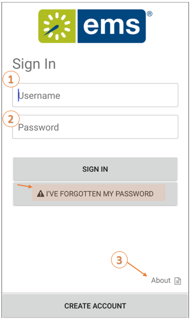

Tip: The Create Account link displays only if your Administrator has enabled it and your EMS Mobile App has retained the EMS Native authentication. The Create Account option is not available for Windows, LDAP, and SSO authentications.
This section provides instructions on:

3. Click About to view the following information:
|
|
Tip: The Create Account link displays only if your Administrator has enabled it and your EMS Mobile App has retained the EMS Native authentication. The Create Account option is not available for Windows, LDAP, and SSO authentications. |